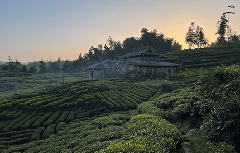

NATIONAL GEOGRAPHIC
At a remote temple in China, a Kung Fu master keeps the past alive
HISTORY & CULTURE
- 
The hill was corduroyed in green hedgerows of Camilla sinesis, the tree first domesticated to please the palates of tea drinkers some 3,000 years ago. The sword belonged to Yu Chengzhang. Uncle Yu was a martial artist and poet who wrote poems by the kilo.
“I write several poems when I awake,” he said at the hilltop temple. “I do this every day.”
The temple’s name was Wu De. Uncle Yu composed his stanzas there with a cheap pen on sheets of plain white paper. He stacked these papers in a dim hermit’s quarters. Altogether his poetry weighed, by his estimate, about a quarter of a ton.
“You appeared my dreams,” Uncle Yu told me the next morning. “You were meeting an 80-year-old woman. So I wrote a poem about it.”
He read the poem out loud. It was done in classical style, in four-line stanzas with five to seven syllables. It told of clouds blowing about in the south and women pickers bent in the tea gardens singing. I couldn’t follow it, to be honest. Then he changed into a yellow Kung Fu suit and gave a martial arts demonstration.
What can I say about how Uncle Yu moved?
He was a man in his 70s. Once, he’d been very famous. He was the best Kung Fu master in Ya’an, the nearby city in western Sichuan, where he’d taught thousands of students. By the 20th movement, he was sweating. By the 30th, I could hear him wheeze. But the clouds still moved about in him. So did some faint echo of a song, rising and falling as his slippered feet scuffed across the clay of the temple courtyard. Watching him stirred the sorts of feelings you might get holding a river smoothed cobble. That weight of long vanished power. Of repetition distilled into stillness.
Uncle Yu’s family lived in Ya’an. There was a grown son bored with his father’s ways. They didn’t visit the hilltop temple often. Uncle Yu’s smile grew wistful talking about it.
“My advice,” Uncle Yu said, “is never take a child to see martial arts before the age of seven. They will turn against it.”
One of the tea pickers giggling at Uncle Yu’s performance was Yang Shou Yin.
Yang was born in a village over the hill. She attended school there until the second grade. Later, she herded pigs. She married at 20 and had a baby. She picked tea.
“It sort of went like that,” Yang said laughing.
A decade ago, in her 40s, Yang left home to find a better paying job. She traveled to Beijing and worked as a laborer for the water utility. But then the earthquake of 2013 struck the Ya’an region. Yang immediately turned in her company overalls. She hastened home to rebuild the toppled Wu De Temple. The hilltop sanctuary was at least 400 years old, dating from the Ming Dynasty. It was remote: surrounded by billions of tea leaves and only reachable on foot. It had been destroyed once before, by Red Guards, during the Cultural revolution. (“Revolution,” observed Mao, “is not a tea party.”) Yang set about repairing it.
“I had this intuition to come back here,” Yang explained. “I heard the Buddha’s voice instructing me.”
She sent years cajoling the skeptical local farmers. Some donated only one yuan. Others volunteered to carry bricks.
“The people believed in her!” Uncle Yu said.
Every morning before dawn, I watched Yang rise from her pallet in the dark temple to light eight candles in the main shrine. She chanted along with the mantras recorded on her mobile phone. By sunup the immense hedgerows of tea were emblazoned with dew and confettied with workers. Yang was out there, red cheeked and sturdy in the early cold, picking. She earned about $20 a day.
“My desire is to never do any bad things in my life,” Yang said flatly. “Only good things.”
kay to do one bad thing,” cracked Uncle Yu.
Poet and Kung Fu master Yu Chengzhang, now in his 70s, demonstrates moves at Wu De Temple.
Comments :
- john Very good
- john Very good
Leave a Reply
Your email address will not be published. Required fields are marked*
Related posts:
-
 Animal-friendly laws are gaining traction across the U.S.
Animal-friendly laws are gaining traction across the U.S.Late last month, President Joe Biden signed three long-awaited bills into law: a ban on the tiger cub petting and breeding industry, a prohibition on the buying and selling of shark fins, and the FDA Modernization Act 2.0
View article -
 They rely on this lizard to heal their pain. Now it’s endangered.
They rely on this lizard to heal their pain. Now it’s endangered.The six-inch-long reptile, called a jararanko which translates to “lizard” in the Indigenous Aymara language climbs onto a rock, basking in the sunlight. While it’s distracted, Flores leans down and catches it
View article -
 These tortoises are in jeopardy as good luck charms. Here's what we know.
These tortoises are in jeopardy as good luck charms. Here's what we know.A man dressed in a gray t-shirt, black shorts, and a face mask soon approached and introduced himself as “Mr. X.” He didn’t want to use his real name, he said. But he was ready to make a deal. He and his Indian supplier could provide
View article